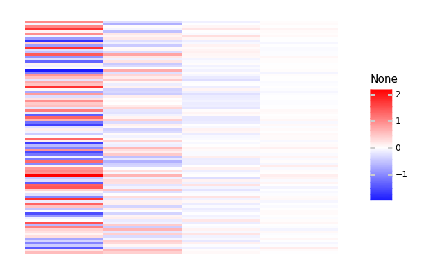

Get Started¶
[1]:
try:
import predicode as pc
except:
!pip install git+https://github.com/sflippl/predicode
import predicode as pc
try:
import lazytools_sflippl as lazytools
except:
!pip install git+https://github.com/sflippl/lazytools
import lazytools_sflippl as lazytools
Using TensorFlow backend.
A minimal model in 60 seconds¶
A minimal hierarchical predictive coding model consists of a single, densely and linearly connected hidden layer. In itself, it amounts to a simple PCA, but already has interesting consequences, both in its outcome, which is able to explain neural effects such as endstopping, and in its learning trajectory.
To get some data that can well be approximated by a PCA, call pc.DecayingMultiNormal:
[2]:
art = pc.decaying_multi_normal(dimensions=10, size=100)
lazytools.matrix_heatmap(art, pole=0)
[2]:
<ggplot: (-9223363282105274210)>
To fit a minimal model to this data, call pc.MinimalHierarchicalModel:
[3]:
hpc = pc.MinimalHierarchicalModel(art, weights='pca', latent_dimensions=4)
WARNING: Logging before flag parsing goes to stderr.
W0825 16:17:11.203196 140077287700288 estimator.py:1811] Using temporary folder as model directory: /tmp/tmp5j2_6j4z
[6]:
hpc.train(steps = 1e4)
[6]:
<tensorflow_estimator.python.estimator.estimator.Estimator at 0x7f65fef97278>
Outcome¶
[7]:
hpc.evaluate()
[7]:
{'loss': 3.440584e-05, 'global_step': 30000}
[8]:
lazytools.matrix_heatmap(hpc.latent_values(), pole=0)

[8]:
<ggplot: (-9223363282137110896)>
[9]:
lazytools.matrix_heatmap(hpc.predict(), pole=0)
W0825 16:17:35.552504 140077287700288 estimator.py:1000] Input graph does not use tf.data.Dataset or contain a QueueRunner. That means predict yields forever. This is probably a mistake.
[9]:
<ggplot: (-9223363282137258517)>